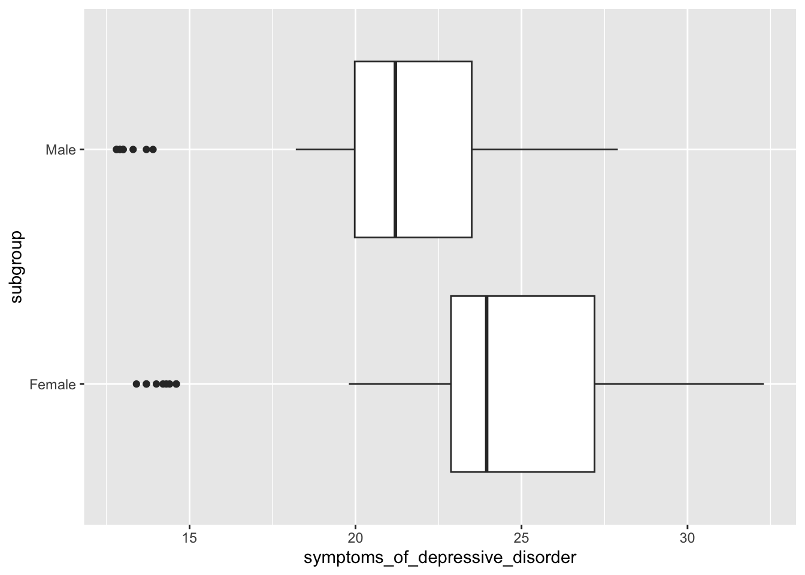
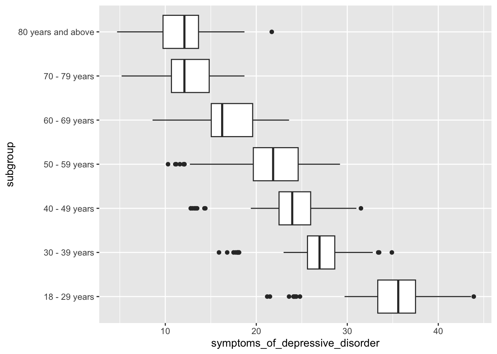
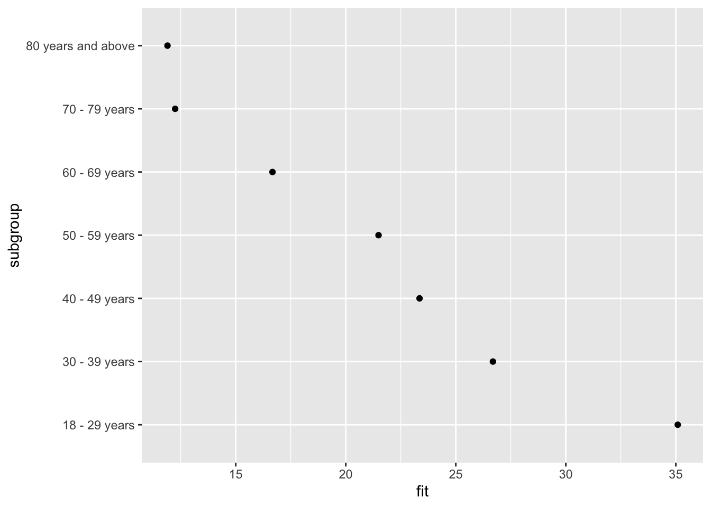
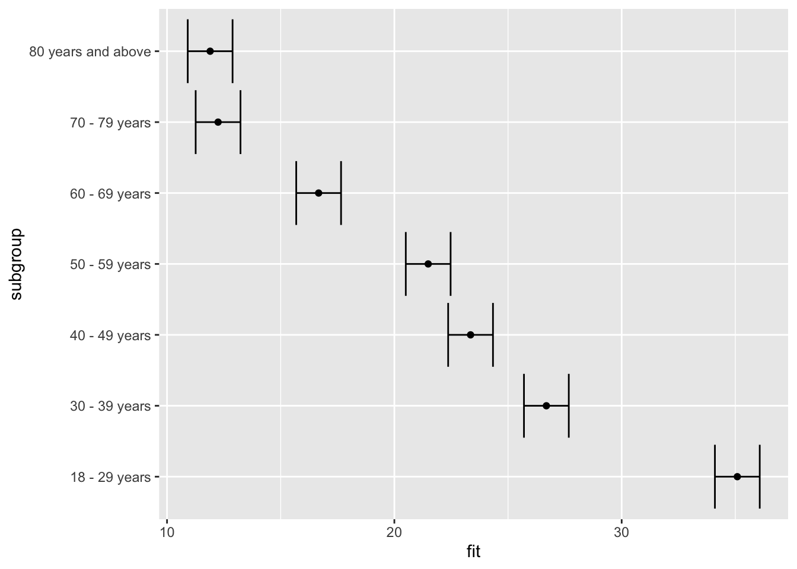
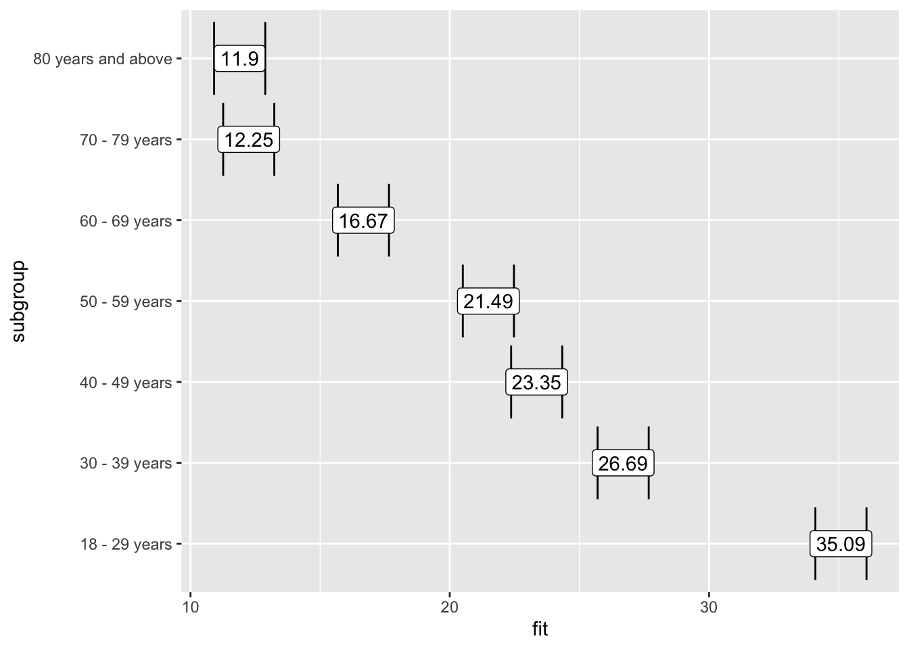

library(tidyverse)
dep_anx <- read_csv("data/depression-anxiety.csv")Linear Regression
Bivariate hypothesis testing – review
- one categorical with two groups and one numeric variable: t-test
- one categorical and one numeric variable: ANOVA
- two numeric variables: correlation
- two categoric variables: chi-squared
Regression
- For regression, we need to pay attention to our dependent/outcome variable:
- linear regression : when our outcome variable is a continuous numeric variable (and we assume a linear relationship)
- logistic regression: when our outcome variable is categorical or binary
Regression
- these algorithms also allows us to run multi-variate analysis (as opposed to bivaraite analysis only)
- we will still get a p-value for hypothesis testing, but we will also look at variance explained (\(R^2\)), and effect sizes.
Data
We will be reusing data sets that we have worked with in previous lectures.
Let’s start with Indicators of Anxiety or Depression Based on Reported Frequency of Symptoms in November 2020-2024
If you have already set the data up, then you can reuse the project you had going.
We will start with using depressive disorder frequency as our outcome/response/dependent variable.
Linear Regression – effect
What’s the effect of anxiety frequency on depressive disorder frequency?
Linear regression:
- estabiblishes a relationship between a dependent variable (Y) and one or more independent variables (X)
- assumes a linear relationship between variables
- finds the best-fitting straight line through the data points
- can tell you how much of the variation in Y is explained by X (through R-squared)
Linear Regression – formula
\(\hat{y} = \beta_0 + \beta_1 x\)
Where:
- \(\hat{y}\) is the predicted value (of the response/dependent variable)
- \(x\) is the independent variable
- \(\beta_0\) is the intercept
- \(\beta_1\) is the slope
Linear Regression in R
Here’s how we create a linear model in R, we use the lm() function:
model <- lm(symptoms_of_depressive_disorder ~ symptoms_of_anxiety_disorder,
data = dep_anx)
summary(model)
Call:
lm(formula = symptoms_of_depressive_disorder ~ symptoms_of_anxiety_disorder,
data = dep_anx)
Residuals:
Min 1Q Median 3Q Max
-8.9138 -1.3956 -0.0444 1.3620 13.4346
Coefficients:
Estimate Std. Error t value Pr(>|t|)
(Intercept) -0.995443 0.113038 -8.806 <2e-16 ***
symptoms_of_anxiety_disorder 0.837579 0.003821 219.222 <2e-16 ***
---
Signif. codes: 0 '***' 0.001 '**' 0.01 '*' 0.05 '.' 0.1 ' ' 1
Residual standard error: 2.231 on 5359 degrees of freedom
(237 observations deleted due to missingness)
Multiple R-squared: 0.8997, Adjusted R-squared: 0.8997
F-statistic: 4.806e+04 on 1 and 5359 DF, p-value: < 2.2e-16Results Interpretation
The results suggest that anxiety and depressive symptoms are closely related. For each one-unit increase in anxiety symptoms, depressive symptoms increase by 0.84 units. When frequency of anxiety symptoms are at zero, the model predicts negative frequency depressive symptoms (-0.995). The model explains about 90% of the variance in frequency of depressive symptoms.
Correlation
As a reminder, here’s our correlation results.
cor.test(dep_anx$symptoms_of_depressive_disorder,
dep_anx$symptoms_of_anxiety_disorder)
Pearson's product-moment correlation
data: dep_anx$symptoms_of_depressive_disorder and dep_anx$symptoms_of_anxiety_disorder
t = 219.22, df = 5359, p-value < 2.2e-16
alternative hypothesis: true correlation is not equal to 0
95 percent confidence interval:
0.9457571 0.9511318
sample estimates:
cor
0.9485127 Linear regression – categorical predictor
Question: what is the effect of biological sex on reported frequency of symptoms of depressive disorder?
We start getting the relevant data subset that answers our question:
data_by_sex <- dep_anx |>
filter(group == "By Sex")Review – box plot (descriptive statistics)
data_by_sex |>
ggplot(aes(y = subgroup, x = symptoms_of_depressive_disorder)) +
geom_boxplot()
Review – two sample t-test (hypothesis testing)
t.test(symptoms_of_depressive_disorder ~ subgroup,
data = data_by_sex)
Welch Two Sample t-test
data: symptoms_of_depressive_disorder by subgroup
t = 4.1125, df = 136.39, p-value = 6.728e-05
alternative hypothesis: true difference in means between group Female and group Male is not equal to 0
95 percent confidence interval:
1.517796 4.329426
sample estimates:
mean in group Female mean in group Male
24.11528 21.19167 How do we interpret these results?
Linear regression
dep_by_sex <- lm(symptoms_of_depressive_disorder ~ subgroup,
data = data_by_sex)
summary(dep_by_sex)
Call:
lm(formula = symptoms_of_depressive_disorder ~ subgroup, data = data_by_sex)
Residuals:
Min 1Q Median 3Q Max
-10.7153 -1.2344 0.0083 2.5847 8.1847
Coefficients:
Estimate Std. Error t value Pr(>|t|)
(Intercept) 24.1153 0.5027 47.973 < 2e-16 ***
subgroupMale -2.9236 0.7109 -4.113 6.6e-05 ***
---
Signif. codes: 0 '***' 0.001 '**' 0.01 '*' 0.05 '.' 0.1 ' ' 1
Residual standard error: 4.265 on 142 degrees of freedom
(20 observations deleted due to missingness)
Multiple R-squared: 0.1064, Adjusted R-squared: 0.1001
F-statistic: 16.91 on 1 and 142 DF, p-value: 6.595e-05Results Interpretation
This results show the relationship between biological sex and reported frequency of symptoms of depressive disorder. Males show significantly lower frequency of depression symptoms than females (the reference group) On average 2.92 fewer men (β = -2.92, p < 0.0001) report symptoms of depression compared to women. The intercept (24.12) represents the average number of women that report frequency of depression symptoms. The p-value for the male subgroup is very small (p = 0.000066, p < 0.05). This indicates biological sex differences are highly unlikely to be due to chance.
Results Interpretation
Model fit: R-squared (\(R^2\)), or variance explained, is 0.106, meaning that biological sex explains about 10.6% of the variance in reported frequency of depression symptoms. This is a relatively small amount of explained variance, suggesting other factors not included in the model also influence the frequency of depression symptoms.
Linear regression – categorical predictor (more than two groups)
Question: what is the effect of age group on reported frequency of symptoms of depressive disorder?
We start getting the relevant data subset that answers our question:
data_by_age <- dep_anx |>
filter(group == "By Age")Review – box plot (descriptive statistics)
data_by_age |>
ggplot(aes(y = subgroup, x = symptoms_of_depressive_disorder)) +
geom_boxplot()
Linear regression
How do we interpret these results?
dep_by_age <- lm(symptoms_of_depressive_disorder ~ subgroup,
data = data_by_age)
summary(dep_by_age)
Call:
lm(formula = symptoms_of_depressive_disorder ~ subgroup, data = data_by_age)
Residuals:
Min 1Q Median 3Q Max
-13.8875 -1.5740 0.2125 2.5684 9.8028
Coefficients:
Estimate Std. Error t value Pr(>|t|)
(Intercept) 35.0875 0.5018 69.93 <2e-16 ***
subgroup30 - 39 years -8.4000 0.7096 -11.84 <2e-16 ***
subgroup40 - 49 years -11.7347 0.7096 -16.54 <2e-16 ***
subgroup50 - 59 years -13.5986 0.7096 -19.16 <2e-16 ***
subgroup60 - 69 years -18.4181 0.7096 -25.96 <2e-16 ***
subgroup70 - 79 years -22.8417 0.7096 -32.19 <2e-16 ***
subgroup80 years and above -23.1903 0.7096 -32.68 <2e-16 ***
---
Signif. codes: 0 '***' 0.001 '**' 0.01 '*' 0.05 '.' 0.1 ' ' 1
Residual standard error: 4.258 on 497 degrees of freedom
(70 observations deleted due to missingness)
Multiple R-squared: 0.7683, Adjusted R-squared: 0.7655
F-statistic: 274.6 on 6 and 497 DF, p-value: < 2.2e-16Getting effects
library(effects)
effect("subgroup", dep_by_age) |>
data.frame() subgroup fit se lower upper
1 18 - 29 years 35.08750 0.5017541 34.10168 36.07332
2 30 - 39 years 26.68750 0.5017541 25.70168 27.67332
3 40 - 49 years 23.35278 0.5017541 22.36696 24.33860
4 50 - 59 years 21.48889 0.5017541 20.50307 22.47471
5 60 - 69 years 16.66944 0.5017541 15.68362 17.65527
6 70 - 79 years 12.24583 0.5017541 11.26001 13.23165
7 80 years and above 11.89722 0.5017541 10.91140 12.88304Plotting effects
library(effects)
effect("subgroup", dep_by_age) |>
data.frame() |>
ggplot(aes(y = subgroup, x = fit)) +
geom_point()
Plotting effects – adding error bars
library(effects)
effect("subgroup", dep_by_age) |>
data.frame() |>
ggplot(aes(y = subgroup, x = fit,
xmin = lower, xmax = upper)) +
geom_point() +
geom_errorbar()
Plotting effects – adding labels
How do we interpret these results?
library(effects)
effect("subgroup", dep_by_age) |>
data.frame() |>
ggplot(aes(y = subgroup, x = fit,
xmin = lower, xmax = upper,
label = round(fit, 2))) +
geom_point() +
geom_errorbar() +
geom_label() 
Expansion
What other questions can we answer?